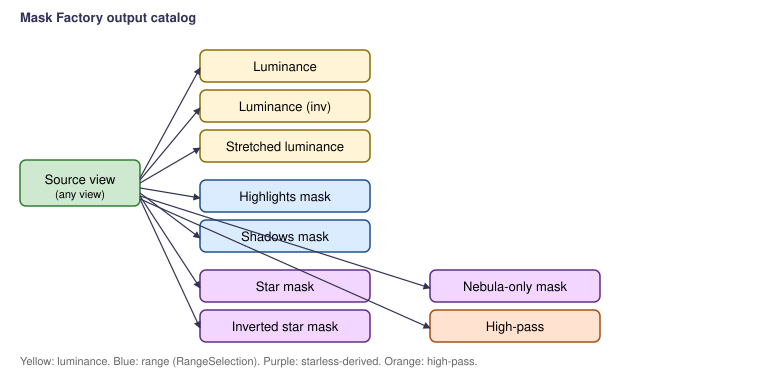

Scripts > EGo > Mask Factory
Generates the masks most useful for narrowband nebula and broadband
galaxy processing in one pass. Each mask becomes a new image window
named <source>_<maskKind> so multiple masks can
coexist.

| Mask | Built from | Typical use |
|---|---|---|
| Luminance | CIEL($T) (color) or $T (mono) |
Generic luminance protection. |
| Luminance (inverted) | ~CIEL($T) |
Protect highlights / reveal shadows when stretching. |
| Stretched luminance | mtf(0.15, CIEL($T)) |
Strong shadow lift; protects faint nebula structures. |
| Highlights | RangeSelection [0.50, 1.00], smoothness 4 | HDR compression, star protection. |
| Shadows | RangeSelection [0.00, 0.20], smoothness 4 | Background noise reduction. |
| Star mask | Original minus StarXTerminator starless (boosted) | Star reduction, MMT operations on stars only. |
| Inverted star mask | complement of the above | Process nebula while leaving stars untouched. |
| Nebula-only mask | luminance of the starless | Curves and saturation work on nebula without star bloat. |
| High-pass | 0.5 + (image − blurred) | Localized sharpening control. |
StarXTerminator for the star mask and nebula-only
mask. If absent, the star mask falls back to the built-in
StarMask process, and the nebula-only mask is
skipped with a console warning.RangeSelection is available in current PixInsight
distributions; if missing, the range masks fall back to a
PixelMath threshold expression.Part of the EGo PixInsight script set. PCL License 2.0.